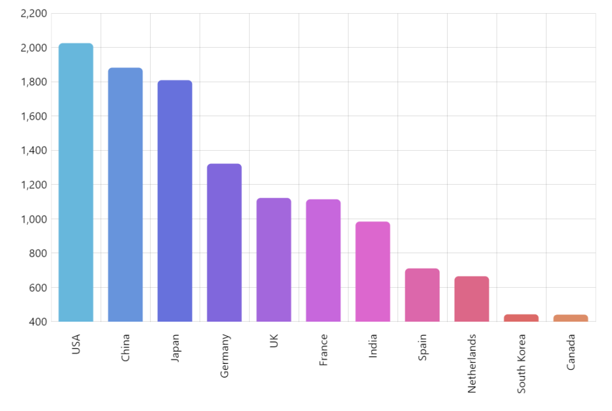
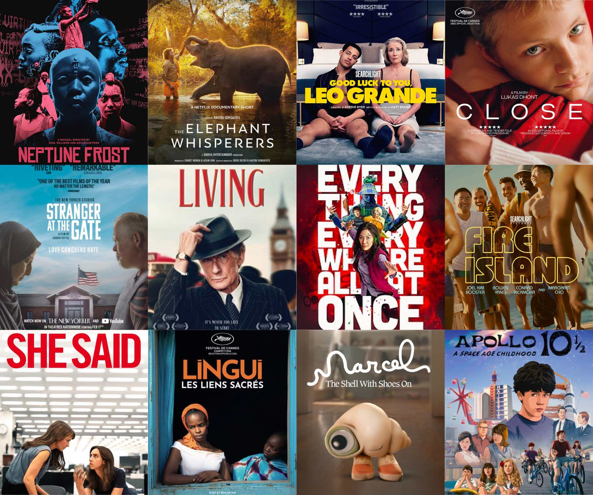

In this project, the Nashville housing data was downloaded from Kaggle, and cleaned using SQL.
Data standardization, breaking down values into new columns, removing duplicates and column deletion techniques were used.

Covid 19 dataset exploration in SQL Server. The data was downloaded from Our World in Data and explored using SQL queries to find interesting and revealing insights from the pandemic.

The previously explored data from the Covid Project can now be easily visualized by people, using easy-to-read graphs, allowing us to discover and share insights that can change the world.

This was a guided project. Looking at what variables effect the gross revenue from movies and which variables correlate with each other. The code was written in Jupyter Notebooks, using Pandas, Numpy, Seaborn and Matplotlib libraries.
In this project, the data of a fitness training equipment was scraped with Python, and posteriorly used to create alerts when the item's price drops. BeautifulSoup, requests and smtplib libraries were used.